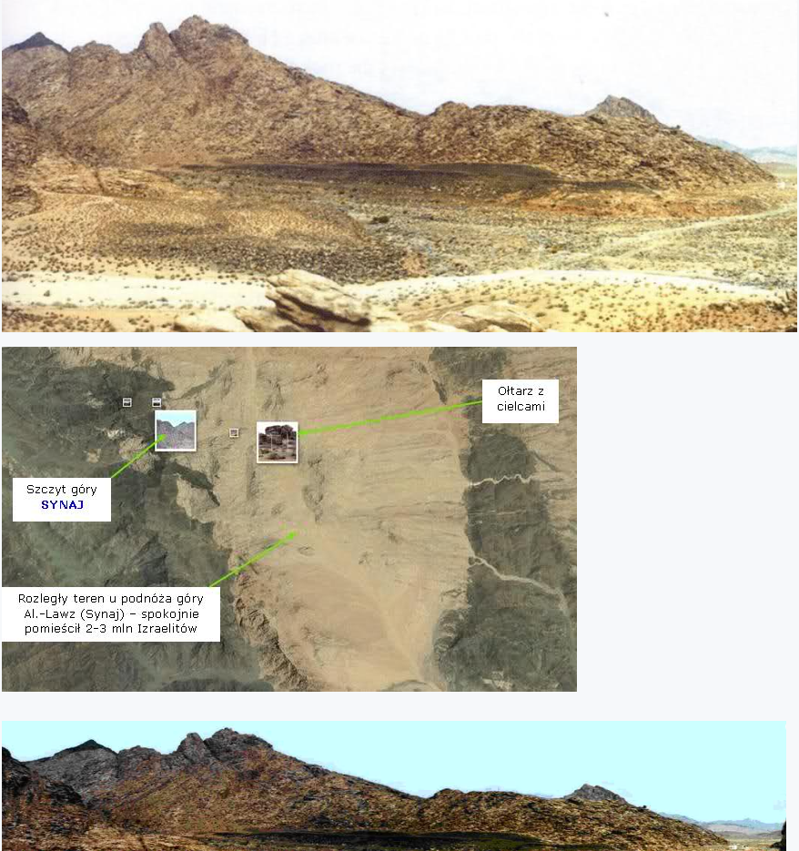
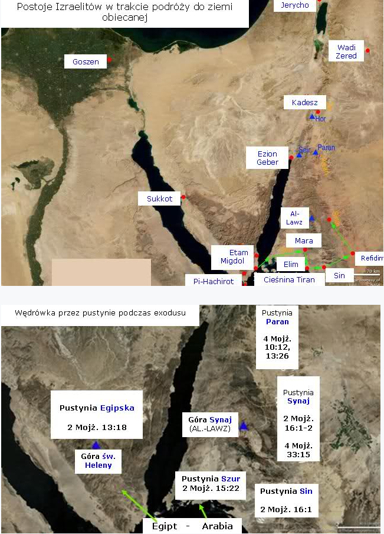

Prawdziwa góra Synaj (część 2)
Ciąg dalszy (CZĘŚĆ 2).
7.
„Potem wyruszyli z Elim i piętnastego dnia drugiego roku, po wyjściu ich z ziemi egipskiej, przybył cały zbór synów izraelskich na pustynię Sin (Syn), która leży między Elim a Synajem.” (2 Mojż.16:1).
8. „Potem wyruszyli z pustyni Syn i rozłożyli się obozem w Dofka.” (4 Mojż.33:12).
9. „Potem wyruszyli z Dofka i rozłożyli się obozem w Alusz.” (4 Mojż.33:13).
10. „Potem wyruszyli z Alusz i rozłożyli się obozem w Refidim; lecz lud nie miał tam wody do picia. (4 Mojż.33:14).
11. „Potem wyruszyli z Refidim i rozłożyli się obozem na pustyni Synaj.” (4 Mojż.33:15).
„Pierwszego dnia trzeciego miesiąca od wyjścia synów izraelskich z ziemi egipskiej, przybyli na pustynię Synaj. (2) Wyruszyli z Refidim, a przybywszy na pustynię Synaj, rozłożyli się obozem na pustyni. Tam obozował Izrael naprzeciw góry. (3) A Mojżesz wstąpił na górę do Boga” (2 Mojż.19:1-3).
„Pierwszego dnia trzeciego miesiąca od wyjścia synów izraelskich z ziemi egipskiej, przybyli na pustynię Synaj… (2) Tam obozował Izrael naprzeciw góry.” (2 Mojż.19:1).
„Trzeciego dnia, z nastaniem poranku, pojawiły się grzmoty i błyskawice, i gęsty obłok nad górą, i doniosły głos trąby, tak że zadrżał cały lud, który był w obozie. (17) Mojżesz wyprowadził z obozu lud naprzeciw Boga, a oni ustawili się u stóp góry.” (2 Mojż.19:16, 17).
Kilka szczegółów, które są obecne do dnia dzisiejszego w tamtej okolicy:
Szczyt góry.
„A góra Synaj cała dymiła, gdyż Pan zstąpił na nią w ogniu. Jej dym unosił się jak dym z pieca, a cała góra trzęsła się bardzo.” (2 Mojż.19:19).
Jedyny zwęglony szczyt góry Jabal al-Lawz (skała metamorficzna – powstała na skutek działania wysokich temperatur), który nosi wyraźne ślady płomieni - skała jest czarna i ma strukturę skały kruszącej się, jakby będącej kiedyś pod wpływem olbrzymich temperatur.
Granica wokół góry.
„I zakreślisz ludowi granicę dokoła, mówiąc: Strzeżcie się wstępować na górę albo dotykać się jej podnóża. Każdy bowiem, kto się dotknie góry, zginie. (23) I rzekł Mojżesz do Pana: Lud nie może wyjść na górę Synaj, gdyż Ty przestrzegłeś nas, mówiąc: Zakreśl granicę dokoła góry i miej ją za świętą.” (2 Mojż.19:12, 23).
Ołtarz z cielcami.
„I przyjął je z ich rąk, i ulał z tego w formie z gliny posąg cielca. Wtedy oni rzekli: To są bogowie twoi, Izraelu, którzy cię wyprowadzili z ziemi egipskiej. (5) Zobaczywszy to, zbudował Aaron ołtarz przed nim i kazał obwołać: Jutro będzie święto Pana. (8) Rychło zeszli z drogi, jaką im nakazałem. Zrobili sobie cielca ulanego, oddali mu pokłon, złożyli mu ofiarę i mówili: To są bogowie twoi, Izraelu, którzy cię wyprowadzili z ziemi egipskiej.” (2 Mojż.32:4, 5, 8, por. Nehemiasza 9:18).
Cielec w formie posągu stał na górze kamieni, które miały dookoła hieroglify przedstawiające „bogów”.
Ogromny teren w pobliżu góry.
Poniżej teren, na którym byli ustawieni Izraelici wokół cielca (widok z nad ołtarza z cielcami):

Pieczara, jaskinia.
„Wstał więc i posiliwszy się, szedł w mocy tego posiłku czterdzieści dni i czterdzieści nocy aż do góry Bożej Choreb. (9) I wszedł tam do pieczary, aby tam przenocować.” (1 Król.19:8-9).
Dystans i czas.
| Wyjście Izraelitów z Egiptu | Dystans | Suma dni | Dni postoju | Dni podróży | Dzienny dystans |
|
Z ziemi Goszen do góry Synaj |
750 km |
45 |
17 |
28 |
27 km/dzień |
|
Z Goshen to Morza Czerwonego |
490 km |
25 |
8 |
17 |
29 km/dzień |
|
Od Morza Czerwonego do Synaj |
260 km |
20 |
9 |
11 |
23 km/dzień |
Po spędzeniu 11 miesięcy i 5 dni pod górą Synaj, Izraelici wyruszyli w kierunku ziemi obiecanej (4 Mojż.10:11-12).

↞ Spis treści
kopia strony: https://jehoszua.ddv.pl/readarticle.php?article_id=24 Wszelkie prawa autorskie należą się autorowi tej strony
z7fa8640406z